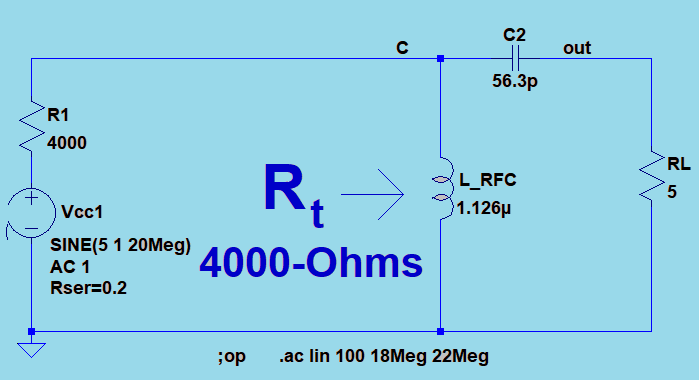
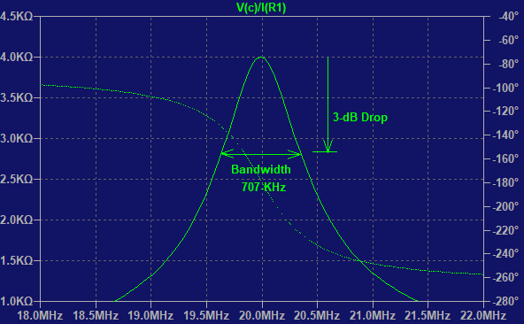
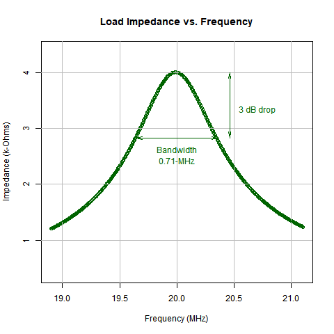
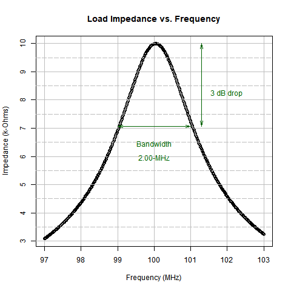

Impedance Transformer Design Tool
Marcel Merchat
RF and Microwave Engineer
Discrete Components or Transmission Line
An impedance transformer can be implemented either with discrete components or as a transmission line. The choice is based on the cost and size of the solution. Usually low frequency circuits use discrete components while the transmission line is more favorable at higher RF and microwave frequencies. In this slideshow, we show how to implement the circuit with discrete components and will describe how to accomplish the same thing with transmission lines using the Smith Chart in another slideshow.
Reproducible Report
This slideshow is also an engineering tool. It is produced by a computer script program. Nothing is performed manually as all calulations are performed in code blocks that are mostly hidden. You can spot visible code blocks by rectangular bounded blocks like this one.
pi
## [1] 3.141593
Sentences like this one are also part of the script but are outside of "code" blocks. This kind of report is called a "reproducible" as the slideshow is not to be altered. Any changes are made to the script program.
Discrete Component Implementation
An impedance transformer is a tuned circuit that performs its function at the frequency of the RF power signal being sent to the antenna. There are different levels of performance:
(a) No bandwidth control: coil, capacitor, and resistor
(b) Controlled bandwidth: coil, two capacitors, and resistor
We first implement the circuit without bandwidth control using a parallel resonance circuit. Next we adjust the bandwidth by placing an additional capacitor across the load.
Part A: Transformer with Default Bandwidth
This method provides a default bandwidth. We begin with these design parameters.
Tuned Frequency \(f_o\) = 20-MHz
Source output impedance \(R_t\) = 4-k\(\Omega\)
Load impedance \(RL\) = 5-\(\Omega\)
Simple Matching Transformer with Default Bandwidth
| RF Small Signal AC Model | Amplifier Load Impedance (RL) |
|---|---|
|  |  |
This parallel resonant circuit presents a matching impedance of 4-k\(\Omega\) at 20 MHz to the power amplifier. The 5-\(\Omega\) resistor is transformed to 4-k\(\Omega\) in this manner. |
The transformed load impedance Rt has a peak at 20-MHz where it matches the source resistance of 4-k\(\Omega\). The bandwidth of 707-kHz is the only one possible for this simple circuit. |
Circuit Q
We will use a concept called Q which represents the relative circuit bandwidth. Let \(f_o\) be the resonant frequency of the amplifier and let \(f_1\) and \(f_2\) be the upper and lower limits of the tuned bandwidth of the transformer. We set the transmitter frequency to \(fo=20\) MHz and define Q as follows:
\[Q=\frac {f_o}{f_2-f_1}\]
\[B=\frac {f_o} {Q}\]
Q is a ratio of two frequencies without units. Later we will use the angular frequency \(\omega = 2 \pi f_o\)
Part A: Simple Circuit
This method provides a defined bandwidth that cannot be adjusted. We begin with a formula from page 44 of the textbook we reference at the end of the slideshow.
\[R_t=(1+Q^2) \cdot R_L\]
Design Calulations without Bandwidth Adjustment
We solve for Q as follows:
\[Q= \sqrt {\frac {R_t}{R_L} - 1}\]
If the power amplifier has an internal output impedance of 4-k\(\Omega\) and a load \(R_L\) of 5-\(\Omega\), the parallel resonant circuit must transform the 5-\(\Omega\) resistance to 4-k\(\Omega\). We will design the matching transformer as follows. We calculate Q = 28.3.
formatC(sqrt(Rt/RL-1), digits = 1, format = "f")
## [1] "28.3"
Design Calulations for Unadjusted Bandwidth ... continued
The bandwidth is already fixed for this design before any component values have been calculated. We calculate the bandwidth as B = 707-kHz using our concept of Q as follows; the extra factor of 1000 converts the result to kHz. Paste is a string operation that displays the result with the kHz units.
\[B= \frac {f_o}{Q}\]
paste(formatC(fo/(Q1*1000), digits = 1, format = "f"), "-kHz", sep="")
## [1] "707.5-kHz"
Determine Capacitor
We can calculate the capacitor value using the Q value. \(X_C = Q \cdot R_L\).
\[C = \frac {1}{\omega \cdot X_C}\]
## branch impedance X_c:
paste(formatC(Q * RL, digits = 1, format = "f"), "-Ohms", sep="")
## [1] "141.3-Ohms"
## branch capacitance C:
paste(formatC((1/ (w * Xc)) * 10^12, digits = 1, format = "f"), "-pF", sep="")
## [1] "56.3-pF"
Determine Inductor
\[X_L= (\frac {1}{Q^2} + 1 ) \cdot X_C\]
\[L= \frac {1}{\omega \cdot X_C}\]
## Branch inductance L:
paste(formatC(( Rt/(Q * w)) * 10^6 , digits = 3, format = "f"), "-uH", sep="")
## [1] "1.126-uH"
Netlist
## [1] " * C:/Users/merch/OneDrive/Documents/LTSpice/RF/impedanceTransformers/imp_transfx/RF_impedance_Transformer_NoBW.asc"
## [2] "L_RFC c 0 1.12609942741738e-06 Ipk=12 Rser=0.0 Cpar=0"
## [3] "C1 c out 5.63049713708692e-11 V=2.5K Irms=0 Rser=0 Lser=0"
## [4] "RL out 0 5"
## [5] "Rt N01 c 4000"
## [6] "Vcc N01 0 SINE(018.921.1Meg) AC 1 Rser=0"
## [7] ";op"
## [8] ".ac lin 500 18.9Meg 21.1Meg"
## [9] ".backanno"
## [10] ".end"
## [11] "NA"
## [12] ""
## [13] ""
| Impedance Response for simple Circuit with Default Bandwidth |
|---|
|  |
The response of the transformer has a peak at 20-MHz where it matches the source resistance of 4-k\(\Omega\) for the power amplifier. The 707-kHz bandwidth is the only one possible for this simple circuit. |
Part B: Transformer with Designed Bandwidth
This method provides a designed bandwidth by means of a tapped resonant circuit. We begin with these design parameters.
Tuned Frequency \(f_o\) = 100-MHz
Bandwidth BW = 2-MHz
Source output impedance \(R_t\) = 10-k\(\Omega\)
Load impedance \(RL\) = 1-\(k\Omega\)
| Small Signal Model for 2-MHz Bandwidth at 100-MHz. |
|---|
 |
Matching transformer |
Step-1: Circuit Q for Bandwidth Control
\[Q_t= \frac {f_o}{BW}\]
paste("Qt =", formatC(Qt, digits = 1, format = "f"))
## [1] "Qt = 50.0"
The tap section contribution to Q is designated as \(Q_p\) and is calculated as follows:
\[Q_p= \sqrt{\frac {R_L}{R_t} \cdot (Q_t^2 + 1) -1}\]
paste("Qp =", formatC(sqrt((RL/Rt) * (Qt^2 + 1) - 1), digits = 2, format = "f"))
## [1] "Qp = 15.78"
Step-2: Calculate Capacitance of C2
C2 = \(\sqrt{\frac {Q_p}{w \cdot R_L}}\)
paste("C2 = ", formatC((Qp/(w * RL)) * 10^12, digits = 1, format = "f"), "-pF", sep="")
## [1] "C2 = 25.1-pF"
Step-3: Equivalent Series Components across Tap Connnection
The parallel tap components C2 and RL are replaced by the series combination of \(C_{se}\) and \(R_{se}\) respectively.
\[C_{se} = C_2 \cdot (\frac {1}{Q_p^2+1})\]
paste("Cse = ", formatC((C2 * (1/(Qp^2) + 1)) * 10^12, digits = 1, format = "f"), "-pF", sep="")
## [1] "Cse = 25.2-pF"
Parallel Tap Component:
\[R_{se} = \frac {RL}{Q_p^2+1}\]
paste("Rse = ", formatC(RL/((Qp^2) + 1), digits = 1, format = "f"), "-Ohms", sep="")
## [1] "Rse = 4.0-Ohms"
Branch Impedance \(X_C\):
\[X_C = Q_t \cdot R_{se}\]
paste("XC = ", formatC(XC, digits = 1, format = "f"), "-Ohms", sep="")
## [1] "XC = 199.9-Ohms"
paste("C = ", formatC((1/(w*XC)) * 10^12, digits = 1, format = "f"), "-pF", sep="")
## [1] "C = 8.0-pF"
Circuit Component C1:
\[C1= \frac {-C \cdot C_{se}}{C - Cse}\]
paste("C1 = ", formatC((-Cse * C / (C - Cse)) * 10^12, digits = 1, format = "f"), "-pF", sep="")
## [1] "C1 = 11.6-pF"
Determine Inductor
\[w^2= \frac{1}{L \cdot C} - \frac{R^2}{L^2}\]
Solve this quadratic for L at resonant frequency \(w\)
paste(formatC(L * 10^6, digits = 2, format = "f"), "-uH", sep="")
## [1] "0.32-uH"
The quadratic equation has a second solution for L. We choose the higher value.
Netlist
## [1] " * C:/Users/merch/OneDrive/Documents/LTSpice/RF/impedanceTransformers/imp_transfx/bw_control.asc"
## [2] "L C 0 3.18055289143294e-07 Ipk=120 Rser=0.0 Cpar=0"
## [3] "Vcc N01 0 SINE(0 97103Meg) AC 1 Rser=0"
## [4] "Rt N01 C 10000"
## [5] "C1 C out 1.163297116301e-11"
## [6] "RL out 0 1000"
## [7] "C2 out 0 2.51192689211422e-11"
## [8] ";op"
## [9] ".ac lin 500 97Meg 103Meg"
## [10] ".backanno"
## [11] ".end"
## [12] ""
## [13] ""
## [14] ""
## [15] ""
| Impedance Response for 2-MHz Bandwidth Circuit |
|---|
|  |
The response of the transformer has a peak at 100-MHz where it matches the source resistance of 10-k\(\Omega\) for the power amplifier. |
References
This slide show implements the method described in the following book:
Solid State Radio Engineering
Herbert L. Krauss, Charles W. Bostian, Frederick H. Raab
John Wiley & Sons Inc.; 1980